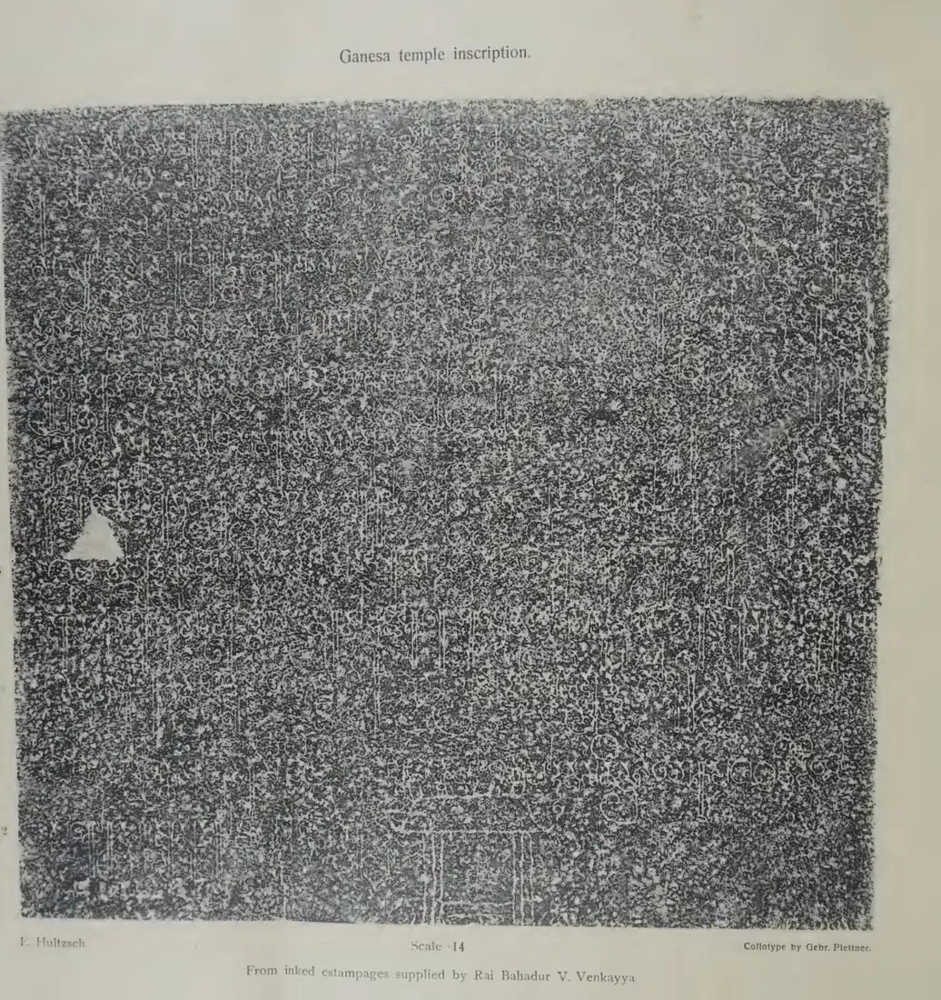

The Pallava inscriptions of the Seven Pagodas
THE PALLAVA INSCRIPTIONS OF THE SEVEN PAGODAS
BY PROFESSOR E. HULTZSCH, PH.D.; HALLE (SAALE).
“The Seven Pagodas” is the Anglo-Indian name of an extensive group of ancient rock-sculptures on the sea-shore, about 30 miles south of Madras. These interesting remains can be reached from Madras by boat on the Buckingham Canal, or from Chingleput Junction by bullock-cart via Tirukkalukkungram. The present Tamil designation of the place is Māvalivaram, while the Brāhmanas call it by the more learned Sanskrit name Mahābalipuram, i.e. ‘the city of Mahābali.’ In the Chōla inscriptions of the “Shore temple” we find the terms Māmallapuram, i.e. ‘the city of Mahāmalla,’ and Tirukkađalmallai,1 i.e. ‘the holy Mallai on the sea.’ Māmallapuram then formed part of Āmūr-nāđu, a sub-division of Āmūr-kōṭtam.2 Both this district and its sub-division were named after the present village of Āmūr3 near Māmallapuram. The four last of the subjoined inscriptions (Nos. 23-26) are at Šāluvaṅgup-pam, a village 2 miles north of Māvalivaram.
The wonderful monuments at the Seven Pagodas have attracted the attention of many ourists and antiquarians. A collection of notices of them was published at Madras in 1869 by Captain Carr under the title “Descriptive and Historical Papers Relating to the Seven Pagodas on the Coromandel Coast.” By far the best and most authentic account was furnished in 1880 by Dr. Fergusson in his Cave Temples of India, pp. 105-159. The Madras Journal of Literature and Science for the year 1880 (pp. 82-232) contains an excellent guide, with a map, by Colonel Branfill, which will be much appreciated by visitors to the spot and will save them much time and trouble.
The important question of the authors and the dates of those excavations can be answered only by a careful study of the inscriptions engraved on them. These I published already in 1890 in the first volume of South-Indian Inscriptions, pp. 1-8. I now reprint my former readings and translations, with some improvements and a few additions,4 to accompany six plates which are based on excellent inked estampages, prepared recently under the personal
1 South-Ind. Inscr. Vol. I. p. 68. The same form of the name occurs in the Nālāyiraprabandham, the sacred scriptures of the Tamil Vaishnavas.
2 South-Ind. Inscr. Vol. I. p. 64.
3 No. 133 on the Madras Survey Map of the Chingleput tāluka. Compare South-Ind. Inscr. Vol. III. p. 165.
4 Two short inscriptions (Nos. 18 and 19) were only lately discovered by Mr. Venkayya. Of two others (Nos. 25 and 26) no fresh impressions were taken, and they are consequently not included in the plates.
supervision of Rai Bahadur Venkayya. For the introductory remarks and the notes I have utilised some fresh materials which have accumulated since the time of the original publication.
The language of the inscriptions is Sanskrit. Nos. 1-19, 25 and 26 are in prose, Nos. 20-24 in verse.1 The authors of the inscriptions themselves inform us that they were members of the ancient southern dynasty of the Pallavas. As none of the inscriptions contains any date, we must try to fix their approximate time on palaeographical grounds. As the accompanying plates will show, the sculptors employed four different alphabets, three of which are of the southern type, while the fourth is in northern characters.
I.—The majority of the short epigraphs on the monolith now styled “Dharmarājā-ratha” (Nos. 1-16) resemble the Mahēndravāđi and Śiyamaṅgalam cave inscriptions which I have assigned to the Pallava king Mahēndravarman I.2 Among the names and surnames of the king who excavated the “Dharmarāja-ratha” we find twice Narasimha (Nos. 1 and 7), which seems to have been his actual name, while the remaining designations look like mere surnames. Among the successors of Mahēndravarman I. there were two kings named Narasimhavarman. As the type of the alphabet is more archaic than that of the second set of inscriptions (which, as will appear presently, probably belongs to the time of Paramēśvaravarman I., the father of Narasimhavarman II.), the Narasimha of the “Dharmarāja-ratha” inscriptions may be identified with Narasimhavarman I, the son of Mahēndravarman I. and the contemporary and enemy of the Western Chalukya king Pulakēśin II. (A.D. 609-642). This identification is rendered almost certain by a reference to the published facsimile of the Bādāmi inscription of Narasimhavarman I.;3 the alphabet of this record is nearly identical with that of the “Dharmarāja-ratha” inscriptions. Consequently, the “Dharmarāja-ratha” must have been sculptured in the first half of the seventh century of our era.
II.—The second, very florid alphabet is found in the inscriptions of the Pallava king Atyantakāma on the monolith now styled “Gaṇēśa temple” (No. 20), in the two caves called “Dharmarāja-maṇdapa” (No. 21) and “Rāmānuja-maṇdapa” (No. 22), and in a short inscription of the same king on the “Dharmarāja-ratha” (No. 17). The same alphabet is employed in the Kāñchi inscriptions of Rājasimha and his son Mahēndravarman (III.).4 The Kāñchi inscriptions seem to call Rājasimha also Narasimhavishṇu, and they state that he was the son of Ugradaṇḍa, ‘the destroyer of Raṇarasika’s city.’ Dr. Fleet was the first to point out that in one of the Kāñchi inscriptions Ugradaṇḍa is named Paramēśvara, and that the epithet Raṇarasika refers to the Western Chalukya king Vikramāditya I. (A.D. 655 to 680). He thus established the identity of Paramēśvara alias Ugradaṇḍa with the Pallava king Paramēśvaravarman I., who, as we know from the Kūram plates, crossed arms with Vikramāditya I. Dr. Fleet further concluded that Rājasimha alias Narasimhavishṇu was the Pallava king Narasimhavarman II. of the copper-plate grants.5 This then was the king in whose time the Kailāsanātha temple at Kāñchi was built. The alphabet of Atyantakāma’s inscriptions at the Seven Pagodas agrees so closely with that of the Kailāsanātha epigraphs that both must be assigned to about the same period. Now from verse 2 of No. 20 I venture to conclude that Atyantakāma’s actual name was Paramēśvara. Consequently, I propose to identify this Atyantakāma with either Paramēśvaravarman I., the father of Rājasimha, or Paramēśvaravarman II., the son of Rājasimha,—preferably with Paramēśvaravarman I.,
1 There are, however, a few prose words in No. 20, line 12; No. 21, l. 12; No. 23, ll. 15 and 17; and No. 24, l. 16.
2 Above, Vol. IV. p. 152 f., and Vol. VI. p. 320. The alphabet of the Trichinopoly cave inscription is more recent, and the opinion that it belongs to Mahēndravarman I. (South-Ind. Inscr. Vol. II. p. 341) cannot be upheld.
3 Ind. Ant. Vol. IX. p. 100, and Dr. Fleet’s Dyn. Kan. Distr. p. 328 f.
4 South-Ind. Inscr. Vol. I. Nos. 24 and 27, and Vol. II. Plate ix.
5 Dyn. Kan. Distr. p. 329 f.
whose reign is well established by inscriptions on stone and copper, while, instead of Paramēś-varavarman II., the Kāñchi inscriptions mention another son of Rājasimha, named Mahēndra-varman(III.). The second group of inscribed monuments at the Seven Pagodas would thus belong to about the third quarter of the seventh century.
III.—The third alphabet is that of an inscription of the Pallava king Atiranachanda on the left of the cave at Śāluvaṅguppam (No. 23) and of three short epigraphs: one at the top of the same cave (No. 25), another on the “ Dharmarāja-ratha ” (No. 18), and a third near the “ Gōpi' Churn ” (No. 19). It resembles, though it is not quite identical with, the alphabet of the Kāsākuḍi plates of Nandivarman.1 The name (or surname) Atiranachanda is unknown from other sources. As the alphabet of stone inscriptions sometimes differs slightly from that of contemporaneous records on copper, there would be no objection to assigning these records, as will be done in the sequel, to the time of Nandivarman, the contemporary of the Western Chalukya king Vikramāditya II.
IV.—The last alphabet, an early kind of Nāgari, is employed in the inscription on the right of the Śāluvaṅguppam cave (No. 24) and in a short label at the top of the same cave (No. 26). No. 24 is a copy of the first six verses of Atiranachanda's epigraph on the left of the same cave (No. 23), and No. 26 is a repetition of the label in the third alphabet which is engraved immediately above it (No. 25). The characters resemble those of the Nāgari version on the Paṭtadakal pillar of the Western Chalukya king Kirtivarman II.2 As we know that the predecessor of this king, Vikramāditya II.,3 took Kāñchi from the Pallava king Nandivarman, it is perhaps not too bold to surmise that the inscriptions in the third and fourth alphabets belong to the reign of his enemy Nandivarman, who would then have borne the surname Atiranachanda. The sudden collapse of the Pallava power at the hands of Vikramāditya II. may have been the reason why so many of the excavations at the Seven Pagodas have remained unfinished. As I have remarked in South-Indian Inscriptions Vol. I. p. 10, we meet with the same plurality of alphabets in the Kailāsanātha temple at Kāñchi. The enclosure of this temple bears three tiers of identical inscriptions. The characters of the third tier are those of the epigraphs of Narasimhavarman II. The alphabets of the second and first tiers are, respectively, those of the left and right inscriptions of the Śāluvaṅguppam cave. Consequently they must have been added at a later date by Atiranachanda (Nandivarman ?).
I am fully aware that my remarks on the third and fourth alphabets do not rest on quite firm ground. But, in the absence of further information, we may place the inscriptions written in both alphabets in the time immediately preceding the conquest of the Pallava territory by Vikramāditya II. (A.D. 733-734 to 746-747). The fact that a northern alphabet was employed along with a southern one suggests that the artisans were recruited from the north of India.
The two last columns of the accompanying table will show at a glance to which of the Pallava kings of the third column I propose to assign each of the Pallava records of the Seven Pagodas. It is worth noting that, with his usual sagacity, Dr. Fergusson had already succeeded in fixing the approximate period of the remains at the Seven Pagodas at about 650 to 700.4
The contents of the subjoined inscriptions are singularly uninteresting and devoid of historical facts. All that we learn from them is a string of names and surnames of three different
1 South-Ind. Inscr. Vol. II. No. 73.
2 Above, Vol. III. p. 4, Plats.
3 South-Ind. Inscr. Vol. I. p. 146; above, Vol. III, pp. 3 and 359.
Cave Temples of India, p. 110 f.
SYNCHRONISTIC TABLE OF THE PALLAVA KINGS OF KĀŃCHI.
| Western Chalukya contemporaries of Pallava kings. | Pallava kings named in Western Chalukya copper-plate grants. | Genealogy of the Pallavas according to their own copper-plate grants. | Pallava kings named in the Kāñchi inscriptions. | Pallava kings named in the inscriptions of the Seven Pagodas. | Nos. of inscriptions published below. |
|---|---|---|---|---|---|
| . . . . | . . . . | Siñhavishpu . . . . | . . . . | . . . . | . . . . |
| . . . . | . . . . | Mahēndravarman I. . . . | . . . . | . . . . | . . . . |
| Pulakēśin II . . | Narasiñmha . . | Narasiñmhavarman I. . . . | . . . . | Narasiñha Atyantakāma Sribhara. | 1-16. |
| . . . . | . . . . | Mahēndra . . . . | . . . . | . . . . | . . . . |
| Vikramāditya I. Ranarasika. | Íśvarapōtarāja . . | Paramēśvaravarman I. . . . | Paramēśvara Ugradanda Lokāditya. . . . | Paramēśvara Atyantakāma Sribhara Ranajaya. | 17, 20-22. |
| . . . . | . . . . | Narasiñmhapōtavarman. . . . | . . . . | Rājasiñha Atyantakāma Sribhara Ranajaya (Narasiñmhavishnu). . . . | . . . . |
| . . . . | . . . . | Paramēśvaravarman II. . . . | . . . . | Mahēndravarman (III.) . . . . | . . . . |
| Vikramāditya II. | Nandipōtavarman | Nandivarman Pallavamalla, a distant relative of Paramēśvaravarman II. | . . . . | Atiranachanda Atyantakāma Srinidhi Śribhara Ranajaya. | 18, 19, 23-26. |
Pallava kings, and the fact that the excavations on which they are engraved were shrines of Íśvara (Śiva) and bore each the name of its respective founder. Thus the “Gaṇēśa temple” (No. 20) and the “Dharmarāja-maṇḍapa” (No. 21) were called Atyantakāma-Pallavēśvara-grīha, i.e. ‘the Íśvara temple of Atyantakāma-Pallava.’ On the “Dharmarāja-ratha,” which had probably been founded by Narasimha[varman I.] alias Atyantakāma, the same name seems to have been bestowed by his descendant [Paramēśvaravarman I.] alias Atyantakāma or Raṇajaya (No. 17). The Śāluvaṅguppam cave bears the label Atiraṇachaṇḍa-Palla[vēśvara-grīha] (Nos. 25 and 26), i.e. ‘the Íśvara temple of Atiraṇachaṇḍa-Pallava.’
The last column but one of the table on page 4 shows that each of the three Pallava kings Narasimha, Paramēśvara and Atiraṇachaṇḍa bore the two surnames Śrīnidhi and Śrībhara. In this connection I would like to mention certain Pallava coins from Māvalivaram which I saw in the cabinet of the Rev. E. Loventhal of Vellore. All of them bear on the obverse a bull (the crest of the Pallavas), and various legends above it. One of the coins, with a star on the reverse,1 reads Śrībharaḥ; another, with a fish on the reverse,2 Śrīni[dhi]; and a third, with a cross on the reverse,3 Mānapara. With the legend of the last coin compare the biruda Atimāna in the inscription No. 9 of the “Dharmarāja-ratha.”
A.—INSCRIPTIONS ON THE “DHARMARĀJA-RATHA” AT MĀVALIVARAM.4
Nos. 1-16 of these inscriptions consist of a number of words in the nominative case, which their first decipherers, Drs. Babington and Burnell, took for names of deities. From a comparison with the remaining inscriptions of the Seven Pagodas, where several of them recur, it follows, however, that they are birudas of a Pallava king whose actual name seems to have been Narasimha (Nos. 1 and 7). Among these surnames, Atyantakāma, Śrīnidhi and Śrībhara were borne also by the two kings mentioned in the later inscriptions of the Seven Pagodas. Others appear again in the inscriptions of the Pallava king Rājasimha at Kāñchi, viz. Parāpara Bhuvanabhājana,5 Śrīmēgha and Sarvatōbhadra.
The two last inscriptions on the “Dharmarāja-ratha” are not written in the same alphabet as Nos. 1-16. No. 17 follows the type of Nos. 20-22, and No. 18 that of No. 23. Each of them designates the “Dharmarāja-ratha” as ‘the Íśvara (Śiva) temple of Atyantakāma-Pallava.’
I.—First Storey.
a.—North.
No. 1.
श्रीनरसिंहः
The glorious Narasimha.
b.—East.
No. 2.
प्रिधिविसारः6 श्रीभरः
Prithivisāra (the best on earth). Śrībhara (the bearer of wealth).
1 Sir Walter Elliot's Coins of Southern India, Plate i. No. 34.
2 Ibid. No. 37. 3 Ibid. No. 33.
4 Madras Survey Map, No. 43. Carr's Seven Pagodas, p. 37, Plate xvii, p. 224.
5 The synonym Avanibhājana occurs in the Śiyamaṅgalam cave inscription; above, Vol. VI. p. 320.
6 Read प्रिधिविसारः. The shortening of the final ī of prithivi is permitted by Pāṇini, vi. 3, 63; compare the proper name Kālidāsa.
No. 3.
भुवनभाजानः1
Bhuvanabhājana (the owner of the world).
c.—South.
No. 4.
[श्रो]मेघः चैलोक्यवर्द्धनः विधिः
Śrimēgha (the cloud (showering) wealth). Trailōkyavardhana (the bestower of prosperity on the three worlds). Vidhi.
No. 5.
अत्यन्तकामः अनेकोभायः2
Atyantakāma (he whose desires are boundless). Anēkōpāya (he (who knows) many expedients).
II.—Second Storey.
a.—North.
No. 6.
स्थिरभक्तिः मदनाभिरामः विधि[:*]
Sthirabhakti (he whose devotion is firm). Madanābhirāma (he who is as handsome as Love). Vidhi.
No. 7.
श्रीनरसिंहः भुवनभाजमः श्रीमेघ[:] अप्रतिहतशासन[:*]
The glorious Narasimha. Bhuvanabhājana (the owner of the world). Śrimēgha (the cloud (showering) wealth). Apratihataśāsana (he whose commands are unopposed).
No. 8.
कामलक्तिः अमेयमायः सकलकल्याणः
Kāmalalita (he who is as charming as Love.) Amēyamāya (he whose diplomacy is immeasurable). Sakalakalyāṇa (the altogether prosperous).
No. 9.
नयनमनोहरः वाम[:] अतिमानः
Nayanamanōhara (he who is pleasing to the eyes). Vāma (the handsome). Atimāna (he whose pride is excessive).
b.—East.
1 Read °भाजनः.
2 Read अनेकोपायः and compare the surname Upāyanipuṇa in the Kāñchi inscriptions.
No. 10.
वामः पराभरः1
Vāma (the handsome). Parāpara (the omnipotent).
No. 11.
अनुपमः नया[ङ्कु]र[.*]
Anupama (the matchless). Nayānkura2 (the sprout of polity).
c.—South.
No. 12.
लक्षितः
Laļita (the charming).
No. 13.
नयनमनोहरः सर्व्वतोभद्रः
Nayanamanōhara (he who is pleasing to the eyes). Sarvatōbhadra (the altogether auspicious).
No. 14.
श्रीनिधिः निरुत्तरः
Śrīnidhi (the receptacle of wealth). Niruttara3 (the unsurpassed).
No. 15.
विधिः विभ्रान्तः
Vidhi. Vibhrānta4 (the passionate).
d.—West.
No. 16.
सत्यपराक्षमः5 परावरः
Satyaparākrama (he whose valour is true). Parāvara (the omnipotent).
III.—Third Storey.
a.—East.
1 Read परापरः (as in the Kāñchī inscriptions) or परावरः (No. 16). The softening of a single consonant between two vowels in parābhara, pridhivisāra (No. 2) and ubhāya (No. 5) is evidently due to the influence of the Tamiļ vernacular on the pronunciation of Sanskrit words.
2 With the first member of the compound Nayānkura compare the surnames Bahunaya and Nayānusārin in the Kāñchī inscriptions. The second member, aṅkura, is synonymous with pôta or pallava, from which the Pallavas derive their name; see South-Ind. Inscr. Vol. II. p. 341, note 1. Compare Buddhyaṅkura (above. Vol. VIII. p. 144 f.), Lalitānkura (South-Ind. Inscr. Vol. II. p. 341, and above, Vol. VI. p. 320), and Tarupāṅkura (No. 20 below, verse 7). The last biruda suggests that we may have to read Navāṅkura for Nayānkura.
See below, p. 9 and note 4.
4 Compare the surnan es Mattapramatta and Mattavikāra in the Kāñchi inscriptions.
5 Read पराक्षमः.
श्रीअत्यन्तकामपल्लवेश्वरगृह[म् ॥] रणजयः
The holy Āśvara (Śiva) temple of Atyantakāma-Pallava. Raṇajaya (the conqueror in battle).
b.—West. No. 18.अत्यन्तकामपल्लवेश्वरगृहम् ॥
The Āśvara (Śiva) temple of Atyantakāma-Pallava.
B.—INSCRIPTION NEAR THE “GĒPĪS’ CHURN” AT MĀVALIVARAM.
According to Mr. Venkayya, who discovered this and the preceding inscription (No. 18) quite recently, No. 19 is engraved ‘on a pillar of the rock-cut mandapa south-west of the “GĒpīs’ Churn.” It is in the same alphabet as No. 23 and consists of a single biruda.
No. 19.श्रीवामांकुशः1
The glorious Vāmāṇkuśa (bearer of a handsome elephant-goad).
C.—INSCRIPTION AT THE “GAṇEŚA TEMPLE,” MĀVALIVARAM.2
This inscription records that the monolith on which it is engraved was a temple of Śiva and had been called ‘the Āśvara temple of Atyantakāma-Pallava’ by its builder, king Atyantakāma. This prince bore the surnames Śrīnidhi, Śrībhara, Raṇajaya, Taruṇāṇkura, Kāmarāga, and several others. His actual name seems to have been Paramēśvara.3
No. 20.- 1 सम्भवस्थितिसंहारकारणं वीतकारणः [1*]
भूयादत्यन्तकामाय जगतां काममद्देनः ॥ [१*] - 2 अमायश्चित्रमायोसावगुणो गुणभाजनः [1*]
स्वस्थो निश्चरो जीयादनीशः परमेश्वरः [॥ २*] - 3 यस्याङ्ग्ठभराक्रान्तः कैलासः सदशाननः [1*]
पातालमगमन्मद्भार्श श्रोनिधिस्तम्बिभर्त्यजम् ॥ [३*] - 4 भक्तिप्रह्लेण मनसा भवभूषणलोलया [1*]
दोष्णा च यो भुवो भारस्त्रीयात्स श्रोभरश्चिरम् [॥ 8*]
1 The anusvāra of मां is doubtful.
2 Madras Survey Map, No. 24. Carr's Seven Pagodas, Plate xiv, pp. 57, 221, 224. Burnell, South-Indian Palcography. 2nd edition, p. 38, note 4.
3 See below, p. 9, note 4.
4 Here and in No. 21, line 5, the correct reading would be दीष्णा च यो भुवं धर्मे, which is found in verse 4 of Nos. 23 and 24.
Plate 1 is bound after this page.
5 अल्यन्तकामो नृपतिर्निर्जितारातिमण्डलः [*]
स्थातो रणजयः शम्भोस्तेनेदं वेश्म कारितम् [॥ ५*]
6 न्नः स्थाणुर्निष्कलः सोमः पावकाद्या1 वियद्वपुः [*]
भीमः शिवो विजयतां शङ्करः कामसूदनः ॥ [६*]
7 राजराजो न विरसश्चक्रभृन्न जनार्हनः [*]
तारकाधिपतिः स्वस्थो जयतात्तरुणाङ्कुरः ॥ [७*]
8 श्रीमतोल्यन्तकामस्य द्विषद्दर्प्यापहारिणः [*]
श्रीनिधेः कामरागस्य हराराधनसङ्गिनः [॥ ८*]
9 अभिषेकजलापूर्णे चित्ररत्नाम्बुजाकरे [*]
आस्ते विशाले समुखः शिरस्सरसि शङ्करः ॥ [९*]
10 तेनेदङ्कारितन्तुङ्गम्बूर्जटेर्मन्दिरगृहम्2 [*]
प्रजानामिष्टसिद्धार्थं शाङ्करीभूतिमिच्छता ॥ [१०*]
11 धिक्तेषान्धिक्तेषाम्पुनरपि धिग्धिग्धिगस्त, धिक्तेषाम् [*]
येषान्न वसति हृदये कुपथगतिविमो-
12 क्षको रुद्रः ॥ [११*] अल्यन्तकामपल्लवेश्वरगृह[म् ॥*]
TRANSLATION.
(Verse 1.) Let (Śiva), the destroyer of Love, (who is) the cause of production, existence and destruction, (but is himself) without cause, fulfil the boundless desires3 of men !
(V. 2.) Let him be victorious, who is (both) without illusion (and) possessed of manifold illusion (Chitramāya), who is (both) without qualities (and) endowed with qualities (Guṇabhājana), who is self-existent (Svastha) (and) without superior (Niruttara), who is without lord (and) the highest lord (Paramēśvara) !4
(V. 3.) Śrinidhi5 bears on (his) head that Aja (Śiva),6 pressed by the weight of whose great toe, the Kailāsa (mountain) together with the ten-faced (Rāvaṇa) sank down into Pātāla.
1 Read पावकात्मा.
2 The composer has treated the syllable gri as if it began with gr and could thus render the preceding vowel prosodically long.
3 By the expression atyantakāmāya the panegyrist also alludes to the king's surname Atyantakāma.
4 All these epithets have to be applied in the first instance to Śiva, and with slight changes of meaning to the king himself. Chitramāya occurs as the name of a Pallava king in the Udayēndiram plates of Nandivarman (South-Ind. Inscr. Vol. II. p. 372); compare also the biruda Māyāchāra in the Kānchi inscriptions, and Amēyamāya in No. 8. With Guṇabhājana compare Guṇālaya in the Kānchi inscriptions, and Guṇabhara, a surname of Mahēndravarman I. (see above, Vol. VI. p. 320). For Svastha see verse 7, and for Niruttara No. 14. Paramēśvara is the only word in the whole inscription which looks like the actual name of the king. This view is suggested by the fact that two Pallava kings named Paramēśvaravarman are known from copper-plate grants; see South-Ind. Inscr. Vol. II. p. 344.
5 This biruda of Paramēśvara occurs also in verse 8. The same had been a surname of his predecessor Narasiṅha; see No. 14.
6 I.e. he is a devotee of Śiva.
(V. 4.) Let that Śrībhara1 be victorious for a long time, who bears Bhava (Śiva) in (his) mind which is humbled with devotion, and (who bears) the earth on (his) arm like a coquettish ornament!
(V. 5.) King Atyantakāma, who has subdued the circle of (his) foes, is famed (by the name of) Raṇajaya;2— he caused to be made this abode of Śaṁbhu (Śiva).
(V. 6.) Let (Śiva) be victorious, who is (both) sentient (and) motionless (Sthāṇu).3 who is (both) undivided (and) the moon,4 who has (both) the nature of fire (and) a body of air, who is (both) terrible (Bhima) (and) kind (Śiva), who is (both) beneficent (Śaṁkara) (and) the destroyer of Love!
(V. 7.) Let Tarunāṇkura5 be victorious, who is a king of kings (Rājarāja), (but) is not ugly (like Kuvēra), who is an emperor, (but) does not distress people, (while Vishṇu is both Chakrabhrit and Janārdana), who is the lord of protectors (and) independent (Svastha), (while the moon is the lord of stars, but is waning in the dark habf of the month and subject to eclipses)!
(V. 8 f.) Just as in a large lake, filled with water (which is fit) for bathing, (and) covered with various lotus-flowers, handsome Śaṁkaia (Śiva) abides on the massive head — sprinkled with the water of coronation (and) covered with bright jewels—of the glorious Atyantakāma,6 who deprives (his) enemies of (their) pride, who is a receptacle of wealth (Śrīnidhi), who possesses the charm of Love (Kāmarāga),7 (and) who assiduously worships Hara (Śiva).
(V. 10.) He, desiring (to attain) the glory of Śaṁkara (Śiva), caused to be made this lofty dwelling-house of Dhūrjati (Śiva), in order (to procure) the fulfilment of (their) desires to (his) subjects.
(V. 11.) Six times cursed be those in whose hearts does not dwell Rudra (Śiva), the deliverer from the walking on the evil path!
(Line 12.) The Īśvara (Śiva) temple of Atyantakāma-Pallava.
D.—INSCRIPTION AT THE “DHARMARĀJA-MAṇḍAPA,” MĀVALIVARAM.8
This inscription is a duplicate of the one at the “Gaṇēśa temple” (No. 20) and proves that, like the latter, the cave-temple now called “Dharmarāja-maṇḍapa” was in reality a shrine of Śiva, that it owed its foundation to the Pallava king Paramēśvara, and that this king had called it the ‘Īśvara temple of Atyantakāma-Pallava’ (l. 12) after one of his own surnames.
No. 21.
- 1 [सम्भवस्थितिसंहारकारणं वीतकारणः] [1*] भूयादल्यन्तकामाय जगतां
- 2 काममर्दनः ॥ [१*] अमायश्चित्रमायोसावगुणो गुणभाजनः [1*] सख्यो
1 This surname was also borne by Narasimha (No. 2), by Atiraṇachaṇḍa (Nos. 23 and 24, verse 4), and by Rājasimha of Kāñchī.
2 The same surname of Paramēśvara occurs in No. 17. It was borne also by Atiraṇachaṇḍa (Nos. 23 and 24, verse 6), and by Rājasimha of Kāñchī.
3 While the trunk of a tree (sthāṇu) is insentient.
4 Who is divided into sixteen kalās.
5 Tarunāṇkura, ‘the young sprout,’ seems to have been a biruḍa of Paramēśvara. Compare above, p. 7, note 2.
6 ‘Śiva abides on the head of Atyantakāma,’ means the same as ‘A. bears Śiva on his head’ (verse 3), viz. ‘he is a devotee of Śiva.’
7 With this surname, which was borne also by Paramēśvara’s successor Atiraṇachaṇḍa (see Nos. 23 and 24, verse 1), compare the synonyms Madanābhirāma and Kāmalalita (Nos. 6 and 8), and Kāmavilāsa in the Kāñchī inscriptions. The appellation “Kāmarāja temple” which Colonel Branfill attributes to the so-called “Gaṇēśa temple” rests on a misreading in Dr. Barnell’s transcript, viz. Kāmarāja for Kāmarāga.
8 Madras Survey Map, No. 44. Madras Journal of Literature and Science for 1880, p. 135.
3 निश्चरो जीयादनीशः परमेश्वरः ॥ [२*] यस्याङ्गुष्ठभराक्रान्तः कैलासस्पद-
4 शाननः [1*] पातालमगमन्मूर्जा श्रीनिधिस्तस्विभर्त्यजम् ॥ [३*] भक्तिप्रह्नेण
मनसा भवं भू-
5 षण्लीलया [1*] दोष्णा च यो भुवो भारं1 जीयात्स श्रीभरश्चिरम् ॥
[8*] अत्यन्त-
6 कामो नृपतिर्निर्जितारातिमण्डलः [1*] ख्यातो रणजयः शम्भोस्तेनेदं वेश्म
7 कारितम् ॥ [५*] ज्ञः स्थाणुर्निष्कलः सोमः पावकात्मा वियद्वपुः [1*]
भोमः शिवो विजय-
8 तां शङ्करः कामसूदनः ॥ [६*] राजराजो न विरसश्चक्रभृन्न जना-
र्द्दनः [1*] तारकाधिपतिः स्वस्थो
9 जयतात्तरुणाङ्कुरः ॥ [७*] श्रीमतीत्यन्तकामस्य द्विषद्दर्प्यपहारिणः [1*]
श्रीनिधेः का-
10 मरागस्य हराराधनसङ्गिनः ॥ [८*] अभिषेकजलापूर्णे चित्ररत्नास्वजाकरे [1*]
आ-
11 स्ते विशाले सुमुखः शिरस्सरसि शङ्करः ॥ [९*] तेनेदं कारितन्तुङ्गस्मूर्जटे-
र्मन्दिर-
12 गृहं [1*] प्रजानामिष्टसिद्धत्वं शाङ्करीं भूतिमिच्छता ॥ [१०*] श्रों2 ॥
अत्यन्तकामपल्लवेश्वरगृहम् ॥
13 धिक्तेषान्भिक्तेषाम्पुनरपि धिग्धिग्धिगस्तु धिक्तेषाम् [1*] येषान्न वसति
14 हृदये कुपथगतिविमोक्षको रुद्रः ॥ [११*]
E.—INSCRIPTION AT THE “RĀMĀNUJA-MANĀPA,” MĀVALIVARAM.3
This inscription consists of the last verse (11) of the two preceding inscriptions (Nos. 20 and 21). We may conclude from it that the cave-temple in which it is engraved was likewise a shrine of Śiva, and that it was excavated during the reign of the Pallava king Paramēśvara.
No. 22.
1 [श्री][: ॥*] [धि]क्तेष[ि] धिक्ते[षां] पुनरपि धिग्धिग्धिगस्तु धिक्ते-
2 षां [1*] येषान्न वसति हृदये कुपथगति-
3 विमोक्षको रुद्रः ॥
1 See above, p. 8, note 4.
2 Expressed by a symbol.
3 Madras Survey Map, No. 48. Carr's Seven Pagodas, p. 222, note.
F.—INSCRIPTIONS ON THE CAVE-TEMPLE AT SĀLÙVAÑGUPPAM.1
The inscription on the left of the cave (No. 23) records that this excavation was a temple of Śiva, and that it was made by a king Atiraṇachaṇḍa who named it after himself Atiraṇachaṇḍesvara, i.e. 'the īśvara (temple) of Atiraṇachaṇḍa.' Verses 1, 2 and 4 are identical with three verses of the Māvalivaram inscriptions of Paramēśvara (Nos. 20 and 21), and contain the birudas Atyantakāma, Śrīnidhi, Kāmarāga and Śribhara. Other surnames of Atiraṇachaṇḍa were Raṇajaya, Anugraśila, Kālakāla, Samaradhanamjaya and Saṅgrāmadhīra. Most of these epithets are applied to Rājasimha in his inscriptions at Kāñchi.
The inscription on the right of the cave (No. 24) is a Nāgari copy of the first six verses of No. 23.
Above the entrance of the cave there are two identical inscriptions, according to which the full name of the temple was 'the īśvara temple of Atiraṇachaṇḍa-Pallava.' The first of these two short epigraphs (No. 25) is in the same alphabet as No. 23, and the second (No. 26) in the same Nāgari characters as No. 24.
No. 23.
- 1 श्रीमतोत्यन्तकामस्य द्विष[द्]-
- 2 प्रपद्मारिणः [*] श्रीनिधेः काम-
- 3 रागस्य हराराधनसंगिनः ॥ [१*]
- 4 अभिषेकजलापूर्णे चित्ररत्नास्बुजाकरे [*]
- 5 आस्ते विशाले सुमुखः शिरस्सरसि शंकरः ॥ [२*]
- 6 तेनेदं कारितं शश्वोर्भवनं भूतये भुवः [*] कै-
- 7 लासमन्दरनिभं भूभृतां मूर्ध्नि तिष्ठता ॥ [३*] भक्तिप्रह्ले-
- 8 ए मनसा भवं भूषण्लोलया [*] दोष्णा च यो भुवन्धत्ते
- 9 जीयात्स श्रीभरश्चिरम् ॥ [४*] अतिरण्चण्डः पतिरवनिभु-
- 10 जामतिरण्चण्डेश्वरमिदमकरोत् [*] इह गिरितन-
- 11 यागुहगणसहितो नियतकृतरतिर्भवतु पशुप-
- 12 तिः ॥ [५*] गुर्व्वीमोशानभक्तिं श्रियमतिशयिनीं दुर्व्वहं भारमुव्व्यां
- 13 निस्सामान्यञ्च दानं समम[तिर]ण्चण्डाख्यया [यी बिभक्तिं] [*]
- 14 स्थाने निर्मापितेस्मिन्वि[दितरण्ज]यख्यातिना तेन [भ]र्त्ता भूताना-
- 15 मष्टमूर्त्तिश्चिरमतिरण्च[ण्डेश्वरे] यातु निष्ठाम् [॥ ६*] अ[नुग्र]शील[ः] ॥*]
- 16 यदि न विधाता भरतो यदि न हरिर्नारदो न वा स्कन्दः [*]
बोहुं क इव - 17 समर्थसंगीतं कालकालस्य ॥ [७*] श्री2 ॥ समरधनञ्जयः संग्रामधीरः ॥
श्री2 ॥
1 Madras Survey Map, No. 58. Carr's Seven Pagodas, Plate xv., pp. 59, 120, 222.—Nos. 2 and 3 of Carr's Plate xv. are two independent eye-copies of the same inscription (No. 24).
2 Expressed by a symbol.
TRANSLATION.
(Verse 1 f.) Just as in a large lake, filled with water (which is fit) for bathing, (and) covered with various lotus-flowers, handsome Śānkara (Śiva) abides on the massive head—sprinkled with the water of coronation (and) covered with bright jewels—of the glorious Atyantakāma, who deprives (his) enemies of (their) pride, who is a receptacle of wealth (Śrinidhi), who possesses the charm of Love (Kāmarāga) (and) who assiduously worships Hara (Śiva).1
(V. 3.) For the welfare of the earth, he who is standing at the head of the lords of the earth caused to be made this house of Śāmbhu (Śiva), which resembles (the mountains) Kailāsa and Mandara.
(V. 4.) Let that Śrībhara be victorious for a long time, who bears Bhava (Śiva) in (his) mind which is humbled with devotion, and (who bears) the earth on (his) arm like a coquettish ornament!2
(V. 5.) Atiraṇachaṇḍa,3 the lord of the rulers of the earth, made this (temple called) Atiraṇachaṇḍēśvara. Let Paśupati (Śiva), attended by the mountain-daughter (Pārvati), Guha (Skanda), and the demigods (Gaṇa), always take delight (in residing) here!
(V. 6.) Let the eight-formed lord of beings (Śiva) take up (his) abode for a long time in this temple (called) Atiraṇachaṇḍēśvara, which was caused to be built by him who, together with the name of Atiraṇachaṇḍa, owns deep devotion to Ēśāna (Śiva), abundant wealth, the heavy burden of the earth and unequalled liberality, (and) who is renowned by the name of Raṇajaya!4
(L. 15.) Anugraśila5 (the gentle-minded).
(V. 7.) Who is able to master the music of Kālakāla,6 unless the performer (were) Bharata, Hari, Nārada, or Skanda?7
(L. 17.) Samaradhanaṁjaya8 (Dhanaṁjaya (i.e. Arjuna) in battle). Saṁgrāmadhīra9 (he who is firm in war).
No. 24.
- 1 श्रीमतोत्यन्तकामस्य
- 2 द्विषद्प्रापहारिणः [1*] श्रीनि-
- 3 धे: कामरागस्य हराराध[न]संगि-
- 4 न: ॥ [१*] अभिषेकजलापूर्णे चित्ररत्नां-
- 5 बुजाकरे [1*] आस्ते विशले सुसुखः शिरस्मर-
- 6 सि शंकरः ॥ [२*] तेनेदं कारितं शम्भोभंव-
- 7 नं भूतये भुवः [1*] कैलासमन्दरनिभं भूभृतां
1 Verses 1 and 2 are identical with verses 8 and 9 of Nos. 20 and 21.
2 This verse is nearly identical with verse 4 of Nos. 20 and 21.
3 This name of the king who built the temple was also a surname of Rājasiṅha of Kānchi.
4 See above, p. 10, note 2.
5 This was also a surname of Rājasiṅha of Kānchi.
6 The same surname occurs in the Kānchi inscriptions.
7 Compare the Kānchi inscriptions, where Rājasiṅha's skill as a musician is alluded to by the birudas Ātōdva-Tumburu, Vādya-Vidyādhara and Viṇā-Nārada.
The same was a surname of Rājasiṅha of Kānchi.
9 Compare the synonymous birudas Āhavadhīra and Rapadhīra in the Kānchi inscriptions.
8 मूर्ध्नि तिष्ठता ॥ [३*] भक्ति[प्रह्ने]ण मनसा भव1 भूषण-
9 लीलया [1*] दोष्णा च यो भुवन्धत्ते जीयात्म श्रीभरश्वि-
10 रम् ॥ [8*] अतिरणचण्डः पतिरवनिभुजामतिर-
11 णचण्डेश्वरमिदमकरोत् [1*] इह गिरितनयागु-
12 हगणसहितो नियतकृतरतिर्भवतु पशुपतिः ॥ [५*]
13 गुर्ब्बोमीशानभक्तिं श्रियमतिशयिनीं दुर्ब्बं भारमुब्ब्यां निस्सा-
14 मान्यञ्च दानं सममतिरणच[ण्डाख्य]या [यो बि]भत्तिं [1*] स्थाने
15 निर्म्मापितेस्मिन्बिदितर[णजयख्यातिना ते]न भर्त्ता भूताना-
16 मष्टमूर्त्तिश्विरम[तिरणचण्डे]श्वरे यातु निष्ठाम् ॥ [६*] स्वस्ति ॥
